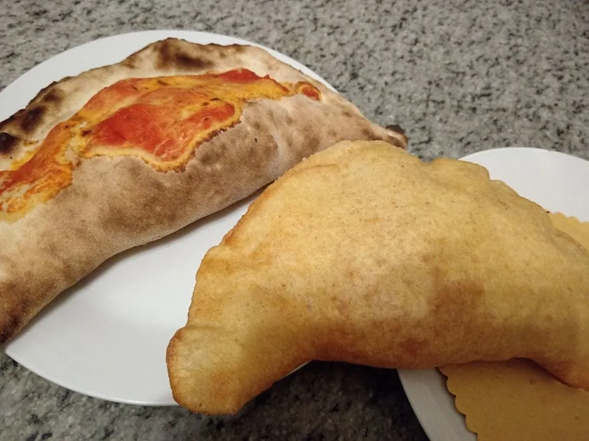
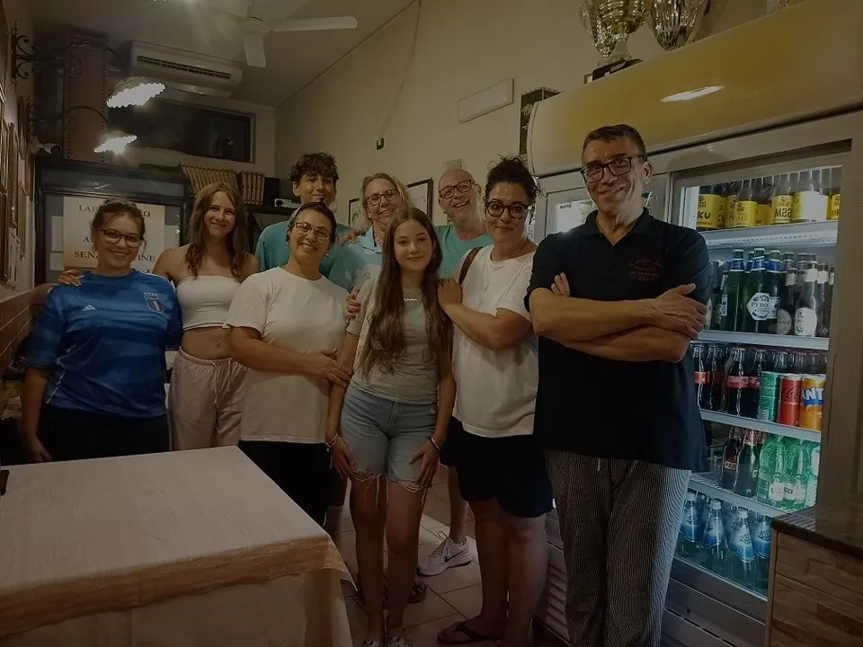
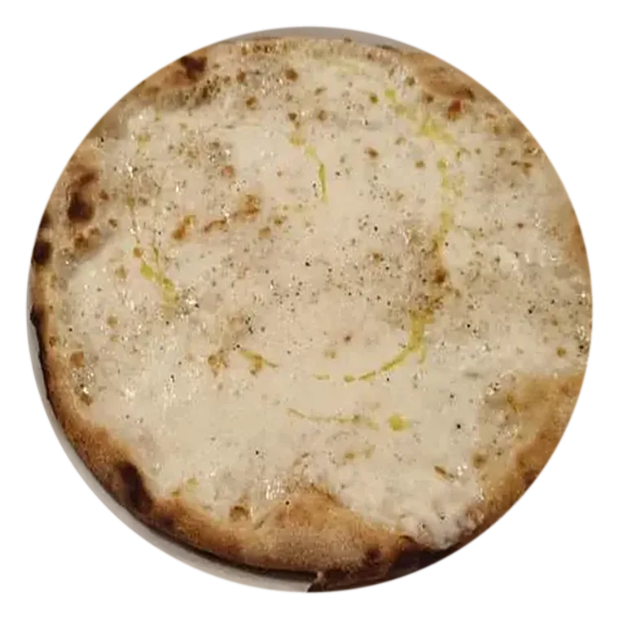

Vito ha 14 anni e si iscrive all'Alberghiero di Bari. Poi anni di cucine e sale ricevimenti.
Pizzeria a Cellamare, dal 2001
Pizza a legna d'ulivo.
Forno in pietra, legna d'ulivo, farine bio macinate a pietra. E una famiglia che fa pizza dal 2001.
Il nome viene da un arco.
Quello dell'antica porta di Cellamare: nel 2001 Vito Zotti e sua moglie Angela aprono il loro primo locale proprio lì accanto. Da allora la strada è stata lunga. Eccola, in breve.

Il 26 ottobre apre L'Antico Arco, accanto alla porta antica del paese. Asporto, domicilio e tanta voglia di fare.
La nuova sede con la saletta da 32 posti. Arrivano farine bio, birre a km 0 e presìdi Slow Food.

Nasce il laboratorio dedicato al senza glutine: pizze, prodotti e patate fritte in olio EVO.
Vito diventa istruttore della Nazionale Italiana Pizzaioli e all'Expo firma il Guinness della pizza più lunga: 1595 metri.

Nove impasti, un menu vegano, il pomodoro nickel free. E la stessa voglia di stupirvi.

Si comincia dall'impasto.
Nove impasti, tutti con farine biologiche. Il classico è compreso, gli altri costano un piccolo supplemento. Valgono per pizze, pizzelle, pucce e panzerotti.



Ti teniamo un tavolo?
Corso Roma 31, 70010 Cellamare (BA)
- Martedì – Domenica
- 19:00 – 23:00
- Lunedì
- Riposo settimanale
Si prenota solo per telefono, anche per asporto e domicilio.
- Sala interna
- Asporto
- Domicilio € 3,00
- Senza glutine
- Wi‑Fi gratuito
4,6/5
su 72 recensioni Facebook
«Antipasti con materia di primissima qualità, vasta scelta di impasti per pizze superlative e dolci buonissimi. Consigliatissimo!»
Lavoriamo con